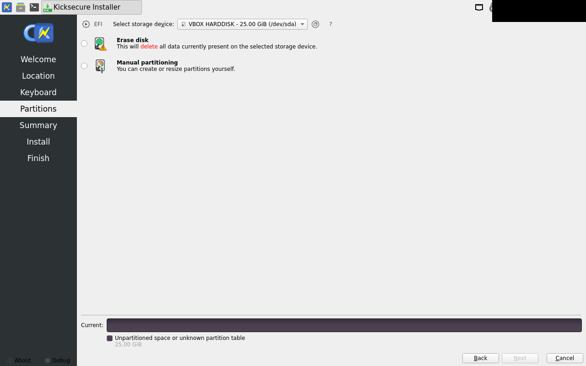
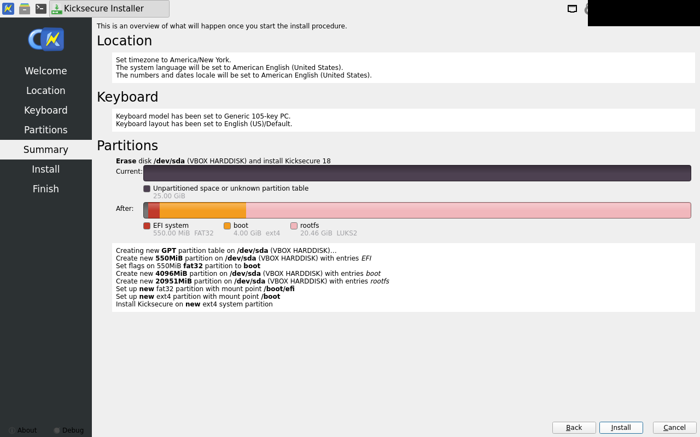
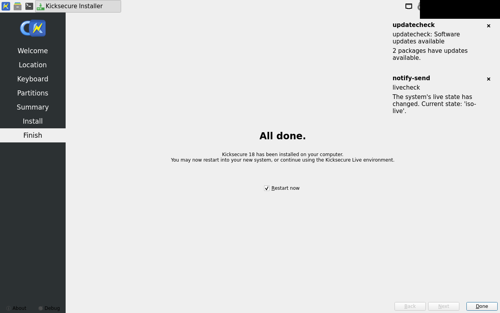

calamares-install fail
exit 5
...emcheck#Login_Security_Check_-_Meaning_of_Colors
[3] https://www.kicksecure.com/wiki/Systemcheck#Physical_Security_Check
[INFO] [systemcheck] Secure Boot[1]: Disabled
Links:
[1] https://www.kicksecure.com/wiki/Secure_Boot
[INFO] [systemcheck] Kicksecure APT Repository: Enabled.
When the Kicksecure team releases TRIXIE updates,
they will be AUTOMATICALLY installed (when you run apt-get dist-upgrade)
along with updated packages from the Debian team. Please read https://www.kicksecure.com/wiki/Trust to understand the risk.
If you want to change this, use:
sudo repository-dist
[INFO] [systemcheck] Debian Package Update Check: Checking for software updates via apt-get... ( Documentation: https://www.kicksecure.com/wiki/Update )
[WARNING] [systemcheck] Debian Package Update[1] Check Result: apt-get reports that packages can be updated.
Please update this machine:
Reboot into PERSISTENT Mode | SYSMAINT Session | system maintenance tasks and click "Install Updates" in the System Maintenance Panel.
Links:
[1] https://www.kicksecure.com/wiki/Update
[INFO] [systemcheck] Please donate!
See: https://www.kicksecure.com/wiki/Donate
fail welcome -- differs beyond tolerance

approved golden (before):

fail partitions -- differs beyond tolerance
approved golden (before):

fail summary -- differs beyond tolerance

approved golden (before):

fail install-done -- differs beyond tolerance

approved golden (before):

fail first-boot -- within tolerance